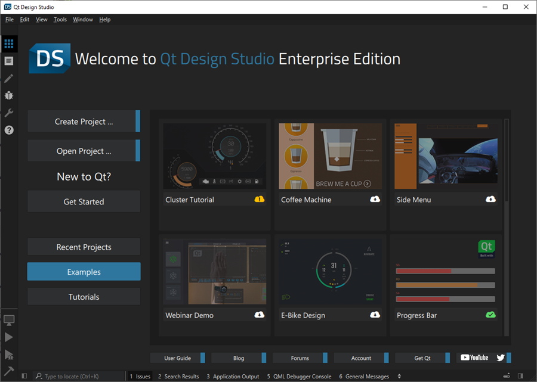

Examples
Qt Design Studio comes with a set of example projects. To see these, select Examples on the Welcome page when you run Qt Design Studio.

To run an example project:
- Select the example project to open it. Qt Design Studio makes all necessary downloads.
- Select
 (Run) to run the example.
(Run) to run the example.
If there is an update available for an example project that you have installed, it is indicated by a yellow icon next to the example project name on the Welcome page. Select the icon to download the latest version of the example project.
Example Documentation
Illustrates how to use the timeline and states to animate transitions in a UI. | |
Illustrates how to use the timeline and states to animate transitions in an application. | |
Showcases the materials in Content Library and the real-time rendering capabilities of Qt Design Studio. | |
Contains project files for the Optimal 3D Scene. | |
Illustrates how to use timelines to create an animated progress bar. | |
Illustrates how to create reusable components and an animated menu for applying 2D visual effects in Qt 5 projects. | |
Illustrates how to use a virtual keyboard in an application. | |
Illustrates how to create a UI that can be run both on the desktop and on MCUs. | |
Contains sources for the From Photoshop to Prototype video tutorial. |